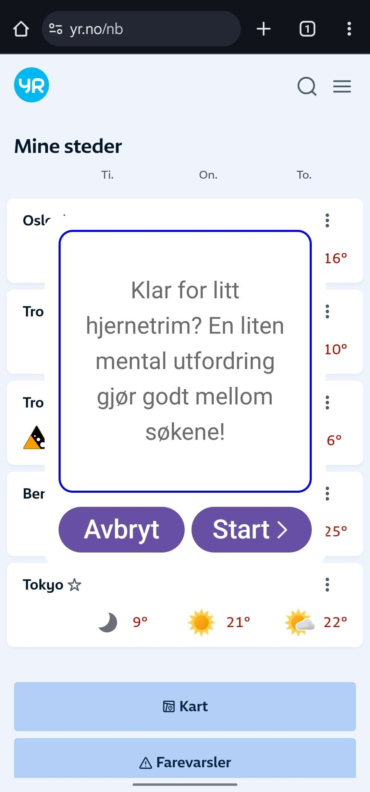
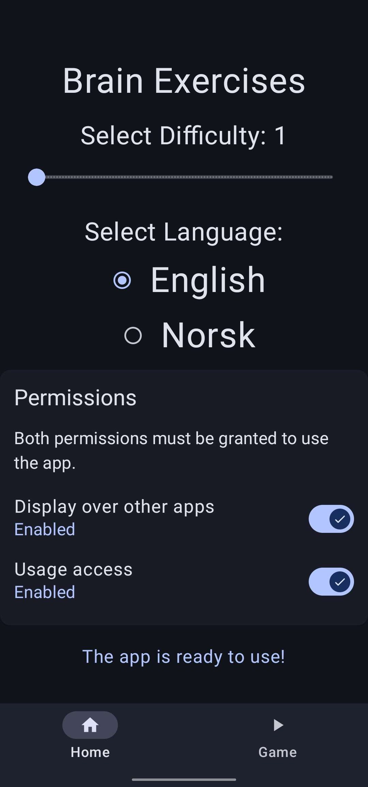
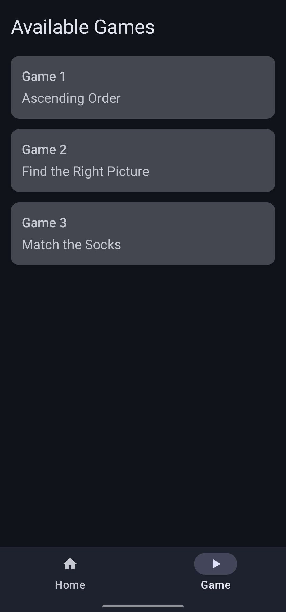

This website provides an overview of Cognify in its current MVP (Minimum Viable Product) form. The app was developed as part of a combined Bachelor and Master thesis project. The graphical designs were adapted from a Figma prototype featured in the original research paper, "Incorporating Cognitive Training with Elderly People’s Everyday Use of Smartphones" .
Pop-Up
Home Page
Game Page
Pop-Up:
The app monitors when Chrome has been in use for 10 seconds and then shows a notification pop-up, allowing the user to either cancel or play a quick cognitive game.
Home Page:
The home screen offers:
A difficulty slider that adjusts game complexity.
A language selector (Norwegian and English).
Two toggle buttons showing which permissions are enabled; clicking them takes the user to the settings menu to manually enable permissions (this cannot be done via pop-up to our knowledge).
Game Page:
While the app usually selects a random game, users can also manually choose and play a specific game from this page if they prefer.
| Name | Name | Name | Name | Name | Name |
|---|---|---|---|---|---|
| Informasjonsteknologi Bachelorprogram | Informasjonsteknologi Bachelorprogram | Informasjonsteknologi Bachelorprogram | Anvendt Datateknologi Bachelorprogram | Dataingeniør Bachelorprogram | Masterprogram |
|
|
|
|
|
|